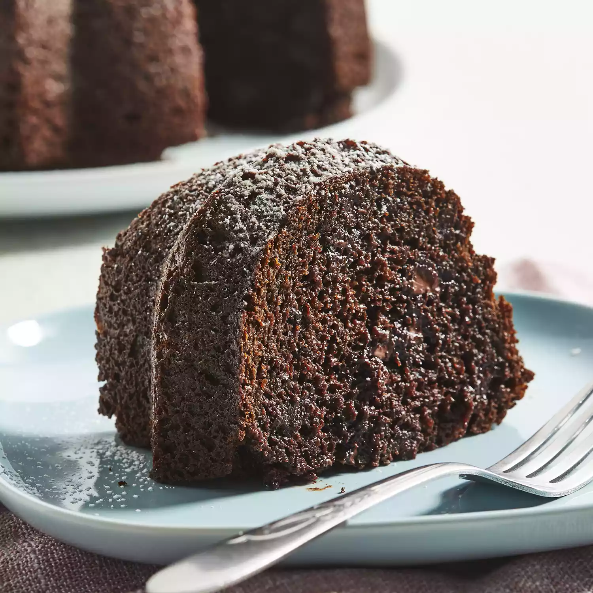

Cake (chocolate_cake)
Ingredients
-
1 (18.25 ounce) package devil's food cake mix
-
1 (5.9 ounce) package instant chocolate pudding mix
-
1 cup sour cream
-
1 cup vegetable oil
-
½ cup warm water
-
4 eggs
-
2 cups semisweet chocolate chips
Directions
- Step1: Preheat the oven to 350 degrees F (175 degrees C). Generously grease a 12-cup Bundt
pan.
- Step2: Mix together cake mix, pudding mix, sour cream, oil, water, and eggs in a large bowl
until well-blended. Stir in chocolate chips; pour batter into the prepared Bundt pan.
- Step3: Bake in the preheated oven until top is springy to the touch and a toothpick inserted
into center of cake comes out clean, 50 to 55 minutes.
- Step4: Cool cake thoroughly in the pan for at least 1 1/2 hours before inverting it onto a plate.